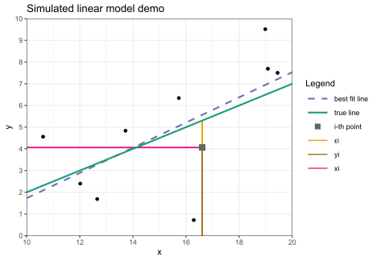
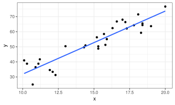
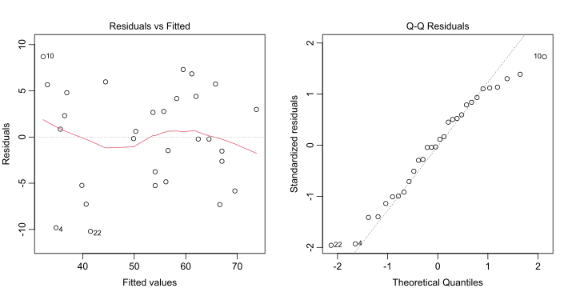
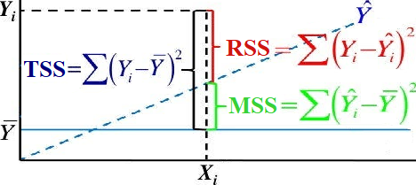
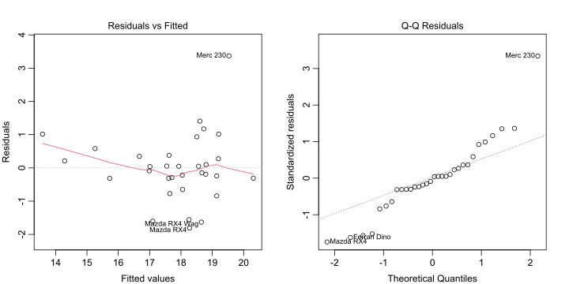
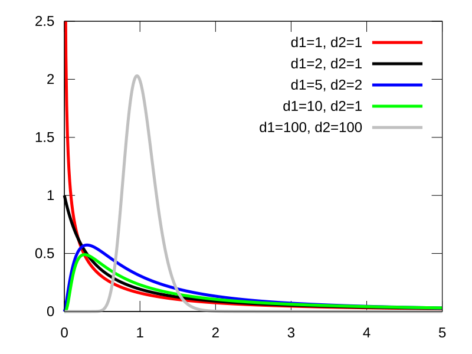
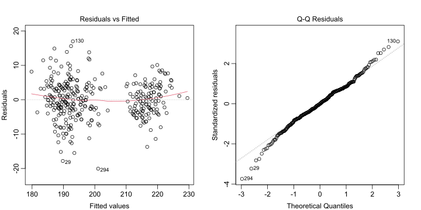

b0 = -3 # true intercept
b1 = 0.5 # true slope
n = 10 # sample size
m = 10 # min X range
M = 20 # max X range
sig = 2 # true sigma
x = runif(n,m,M) # generate Xs
e = rnorm(n,0,sig) # generate errors
y = b0 + b1*x + e # combine for YsSTAT340 - Topic 5: Prediction
Simple linear regression (SLR) review
Quick overview of SLR (one predictor, one response) from 240:
- Let \(X\), \(Y\) be numeric RVs with clear linear relationship; recall theoretical correlation: \[\rho_{X,Y}=\frac{\cov{X,Y}}{\sqrt{\v X\v Y}}\] In sample, we observe sample correlation coefficient: \[r=\frac{\frac1{n-1}\sum(x_i-\bar x)(y_i-\bar y)}{s_xs_y}\]
Note \(n\!-\!1\) used in numerator instead of \(n\), similar to sample SDs \(s_x\), \(s_y\)
\(\rho\), \(r\) always in \([-1,1]\), where:
- Sign (positive/negative/zero) indicates direction of slope of best fit line, and
- Absolute value indicates strength of correlation (closer to ±1 means stronger)
Note: correlation coefficient assumes linear relationship; must be checked with plot!
Interactive correlation demo: https://bwu62.shinyapps.io/correlation
SLR model
Let \((x_i,y_i)\) be sample of size \(n\) of apparently linear points. Model equation for SLR: \[ y_i=\beta_0+\beta_1x_i+\ep_i \]
\(\beta_0\), \(\beta_1\) are true intercept & slope (treated as constants like \(x_i\))
\(\ep_i\iid\norm{0,\sigma^2}\) are errors of each point (the only variable on RHS!)
MC simulated demo:

OLS fitting
Typically ordinary least squares (OLS) used to fit, i.e. sum of squared errors minimized. Given some \(\beta_0',\beta_1'\), define OLS loss function:
\[ \ell(\beta_0',\beta_1')=\sum_{i=1}^n(y_i-(\beta_0'+\beta_1'x_i))^2 \]
To minimize \(\ell(\beta_0',\beta_1')\), set partial derivatives vs \(\beta_0'\), \(\beta_1'\) to 0 and solve (full derivation)

Best fit coefficients: \[ \hat\beta_1~=~r\cdot\frac{s_y}{s_x}~~\,\\ \hat\beta_0~=~\bar y-\hat\beta_1\bar x \]
Note: equivalent to line with slope \(\hat\beta_1\) passing through \((\bar x,\bar y)\)
Can be shown these estimators are unbiased with least variance
Inference
After fitting, our fitted or predicted values \(\hat y_i\) are found by pluggin \(x_i\) back:
\[ \hat y_i=\hat\beta_0+\hat\beta_1x_i \]
Then our residuals \(\hat\ep_i\) are the realizations of \(\ep_i\sim\norm{0,\sigma^2}\), defined:
\[ \hat\ep_i=y_i-\hat y_i=y_i-(\hat\beta_0+\hat\beta_1x_i) \]
Using these, we estimate \(\sigma^2\) using the mean squared error of the residuals:
\[ \hat\sigma^2=\frac{\ell(\hat\beta_0,\hat\beta_1)}{n-2}=\frac{\sum\hat\ep_i^2}{n-2}=\frac1{n-2}\sum_i(y_i-(\hat\beta_0+\hat\beta_1x_i))^2 \]
Can be shown \(\hat\sigma^2\) is unbiased estimator for \(\sigma^2\). Note: \(\sigma^2\) is important since this represents the amount of noise in the data. Higher \(\sigma^2\) \(\to\) more noise \(\to\) less precise results.
Remember to check if \(\hat\ep_i\sim\norm{0,\sigma^2}\) with residual plots!
SE of coefficients
Slope SE can be easily derived now. First, note: \[ \begin{align} \sum(x_i-\bar x)(y_i-\bar y)&=\sum(x_i-\bar x)y_i-\bar y\cancel{\sum(x_i-\bar x)}\\ &=\sum(x_i-\bar x )(\beta_0+\beta_1x_i+\ep_i) \end{align} \]
\[ \begin{align} \v{\hat\beta_1} &=\V{\frac{\sum(x_i-\bar x)(y_i-\bar y)}{\sum(x_i-\bar x)^2}}=\V{\frac{\sum_i(x_i-\bar x)(\cancel{\beta_0 +\beta_1x_i}+\ep_i )}{\sum (x_i-\bar x)^2}}\\ &=\frac{\sum (x_i-\bar x)^2\text{Var}(\ep_i)}{\left(\sum (x_i - \bar x)^2\right)^2}=\frac{\sigma^2}{\sum_i (x_i-\bar x)^2} \end{align} \]
Then, using our sample we can estimate \(\displaystyle\se(\hat\beta_1)=\sqrt{\frac{\hat\sigma^2}{s_x^2(n-1)}}\). Similar process gives:
\(\displaystyle\v{\hat\beta_0}=\sigma^2\!\left[\frac1n+\frac{\bar x^2}{\sum_i (x_i-\bar x)^2}\right]\), so estimate \(\displaystyle\se(\hat\beta_0)=\sqrt{\hat\sigma^2\!\left[\frac1n+\frac{\bar x^2}{s_x^2(n-1)}\right]}\)
Inference on coefficients
Coefficients \(\hat\beta_0\), \(\hat\beta_1\) follow T-distributions with \(n\!-\!2\) degrees of freedom.
- For hypothesis testing, e.g. \(H_0\!:\!\beta_1=0~\) vs \(~H_a\!:\!\beta_1\ne0\), use: \[t_\obs~=~\frac{\hat\beta_1-0}{\se(\hat\beta_1)}\sim T_{n-2}\]
For confidence intervals, e.g. C% interval for \(\beta_1\), use: \[ \text{$C\%$ or $(1\!-\!\alpha)$ interval}~=~\hat\beta_1\pm t_{\alpha/2,\,n-2}\cdot\se(\hat\beta_1) \]
\(t_{\alpha/2,\,n-2}\) is T critical value, e.g.
qt(0.975,df=n-2)for 95%Can also use
confint()function
Confidence/prediction interval for predictions
Suppose we take new observation at \(X=x_\new\), can make two different intervals at there:
Confidence interval for mean predicted response \(\hat y\) (i.e. for the regression line), which has: \[\se(\hat y)\!=\!\sqrt{\hat\sigma^2\!\left[\frac1n\!+\!\frac{(x_\new\!-\!\bar x)^2}{s_x^2(n-1)}\right]}~~~~~\]
Prediction interval for next individual data point \(y_\new\) (i.e. for the data points), which has: \[\se(y_\new)\!=\!\sqrt{\hat\sigma^2\!\left[1\!+\!\frac1n\!+\!\frac{(x_\new\!-\!\bar x)^2}{s_x^2(n-1)}\right]}~~~\]

- Can also use
predict(lm.object, interval="confidence")or"prediction"
Cumulative SLR exercise!
Suppose you have the following observations:
x = c(14.4, 15.3, 11.2, 10.7, 11.9, 13, 18.4, 15.3, 17.3, 10.1, 18.4, 18.1, 16.6, 15.7, 10.3, 19, 10.9, 16.3, 17, 17.2, 14.3, 12.3, 15.8, 17.8, 15.2, 20, 11.1, 18.3, 15.9, 12.1) y = c(50.9, 50.3, 41.7, 25, 34.6, 50.4, 65.5, 48.8, 62.2, 41, 64.4, 71.5, 66.8, 58.5, 38.8, 63.7, 36.5, 62.4, 68, 66.4, 49.7, 31.3, 51.3, 64.3, 56.3, 76.7, 38.8, 59.3, 55.1, 33.4)
Do the following (try both manually and using R functions):
Plot the data, check if SLR is appropriate, and find the correlation \(r\),
Fit a best fit line, plot it, and find the coefficients \(\hat\beta_1\), \(\hat\beta_0\),
Find the fitted values \(\hat y_i\) and residuals \(\hat\ep_i\), and check model assumptions,
Estimate SD of errors \(\sigma\) and SEs of coefficients \(\hat\beta_1\), \(\hat\beta_0\),
Find p-value for testing \(\beta_1\!=\!0\) vs not, and give 95% CIs for \(\beta_1\), \(\beta_0\),
At \(X\!=\!18\), give and interpret 95% confidence and prediction intervals.
Answers using R functions shown first:
Exercise answers using R functions
# plot data, best fit line, and find correlation
ggplot(tibble(x,y),aes(x,y)) + geom_point() + geom_smooth(method=lm,se=F)
cor(x,y)[1] 0.9196951
Exercise answers using R functions (cont.)
# fit with lm(), print summary with coefficients, SEs, and residual SE
# also shows coefficient p-values for testing each =0 vs ≠0
model = lm(y ~ x, data = tibble(x,y))
summary(model)
Call:
lm(formula = y ~ x, data = tibble(x, y))
Residuals:
Min 1Q Median 3Q Max
-10.2063 -4.5742 0.2184 4.3378 8.6965
Coefficients:
Estimate Std. Error t value Pr(>|t|)
(Intercept) -9.9455 5.1557 -1.929 0.0639 .
x 4.1831 0.3375 12.395 6.92e-13 ***
---
Signif. codes: 0 '***' 0.001 '**' 0.01 '*' 0.05 '.' 0.1 ' ' 1
Residual standard error: 5.381 on 28 degrees of freedom
Multiple R-squared: 0.8458, Adjusted R-squared: 0.8403
F-statistic: 153.6 on 1 and 28 DF, p-value: 6.916e-13Exercise answers using R functions (cont.)
[1] 50.29 54.06 36.90 34.81 39.83 44.43 67.02 54.06 62.42 32.30 67.02 65.77 59.49 55.73 33.14 69.53
[17] 35.65 58.24 61.17 62.00 49.87 41.51 56.15 64.51 53.64 73.72 36.49 66.60 56.57 40.67 [1] 0.61 -3.76 4.80 -9.81 -5.23 5.97 -1.52 -5.26 -0.22 8.70 -2.62 5.73 7.31
[14] 2.77 5.66 -5.83 0.85 4.16 6.83 4.40 -0.17 -10.21 -4.85 -0.21 2.66 2.98
[27] 2.31 -7.30 -1.47 -7.27
Exercise answers using R functions (cont.)
2.5 % 97.5 %
(Intercept) -20.506486 0.6153899
x 3.491761 4.8743932# confidence/prediction intervals for prediction at new X=18
predict(model, newdata = data.frame(x=18), interval = "confidence") fit lwr upr
1 65.34984 62.45838 68.2413 fit lwr upr
1 65.34984 53.95459 76.7451Answers using manual computation shown on next slides:
Exercise answers computing manually
# define useful values
n = length(x) ; mx = mean(x) ; my = mean(y) ; sx = sd(x) ; sy = sd(y) ; r = cor(x,y)
# best fit slope and intercept
c(b1 <- r*sy/sx, b0 <- my-b1*mx)[1] 4.183077 -9.945548# fitted and residual values
fitted = b0 + b1*x ; resid = y - fitted
# residual standard error
(sigma.hat = sqrt(sum(resid^2)/(n-2)))[1] 5.380917[1] 0.3374895[1] 5.155683[1] 12.39469[1] 6.916425e-13Exercise answers computing manually (cont.)
[1] 2.048407[1] 3.491761 4.874393[1] -20.5064861 0.6153899[1] 65.34984[1] 1.411564[1] 5.562983[1] 62.45838 68.24130[1] 53.95459 76.74510Verify SEs with MC
Can verify the coefficient SEs with MC:
# use same X vector
x = c(14.4,15.3,11.2,10.7,11.9,13,18.4,15.3,17.3,10.1,18.4,18.1,16.6,15.7,10.3,
19,10.9,16.3,17,17.2,14.3,12.3,15.8,17.8,15.2,20,11.1,18.3,15.9,12.1)
n = length(x)
# previous y points generated with:
b1 = 4 ; b0 = -8 ; sigma = 6
# generate many new samples, fit, and extract coefficients
betas = replicate(1e4, coef(lm(b0 + b1*x + rnorm(n,0,sigma) ~ x)) )
b0s = betas[1,] ; b1s = betas[2,]
c(mean(b0s), mean(b1s))[1] -7.986806 3.998902[1] 5.7415962 0.3755352[1] 5.748852[1] 0.3763182How “good” is fit?
Often how “good” a fit is can have 2 different interpretations:
Is the model appropriate for the data? I.e. is the linear model assumption correct?
- Answered by checking residual plots: are they normal, 0-mean, constant variance?
Alternatively, can ask how predictive is model? I.e. is \(X\) predicting \(Y\) well?
Often answered with coefficient of determination \(R^2\), which \(=(r)^2\) for SLR
Formal definition: recall data composed of “signal” and “noise” components; after fitting,
Total variability of reponse, \(~\tss=\sum(y_i-\bar y)^2~\) (also SST) partitioned into:- Portion explained by Model \(~\mss=\sum(\hat y_i-\bar y)^2~\) (also ESS or SSR)
- Residuals portion not explained by model \(~\rss=\sum(y_i-\hat y_i)^2~\) (also SSE or SSR)
\[ ~~~~~R^2=\frac{\tss-\rss}\tss=\frac\mss\tss\\[6pt]=1-\frac\rss\tss~~~~~~ \]

R2 example
For previous fit,
Coefficients:
Estimate Std. Error t value Pr(>|t|)
(Intercept) -9.9455 5.1557 -1.929 0.0639 .
x 4.1831 0.3375 12.395 6.92e-13 ***
---
Signif. codes: 0 '***' 0.001 '**' 0.01 '*' 0.05 '.' 0.1 ' ' 1
Residual standard error: 5.381 on 28 degrees of freedom
Multiple R-squared: 0.8458, Adjusted R-squared: 0.8403
F-statistic: 153.6 on 1 and 28 DF, p-value: 6.916e-13[1] 0.845839[1] 0.845839Interpretation: about 85% of variation in Y explained by variation in X
Multiple linear regression (MLR)
Generally speaking, MLR same as SLR but with more terms. Model equation:
\[ y_i=\beta_0+\beta_1x_{i,1}+\beta_2x_{i,2}+\cdots+\beta_px_{i,p}+\ep_i \]
\(\beta_0\), \(\beta_1\), …, \(\beta_p\) are true intercept & slopes (still constants like all \(x_{i,j}\))
\(\ep_i\iid\norm{0,\sigma^2}\) are errors of each point (still the only variable on RHS!)
Still usually fit with OLS, i.e. make squares of distances from points as small as possible
Derivation arguably simpler than SLR (details here)
Only some key differences in MLR:
Degrees of freedom: \(n-(p+1)\), one for each coefficient (note \(p=1\) gives SLR’s \(n-2\))
Coefficients interpreted as expected change in \(Y\) while holding other variables constant
MLR naturally attempts to attribute changes in \(Y\) associated with each variable
Useful to account/control for other influencing variables
Downside: predictors should not be strongly correlated, i.e. multicollinearity (can use statistics like VIF to detect)
MLR exercise
Fitting in R: simply add more variables to y ~ var1 + var2 + ... formula in lm() call
Exercise: recall mtcars which contains fuel efficiency data for several cars, fit an MLR model predicting qsec using disp, hp, and wt. Show summary, interpret coefficients values + significances briefly, check residuals, and find 95% confidence intervals for coefficients.
model.mtcars = lm(qsec ~ disp + hp + wt, data = mtcars)
summary(model.mtcars) %>% capture.output %>% tail(-8) %>% cat(sep="\n")Coefficients:
Estimate Std. Error t value Pr(>|t|)
(Intercept) 17.965050 0.849663 21.144 < 2e-16 ***
disp -0.006622 0.004166 -1.590 0.12317
hp -0.022953 0.004603 -4.986 2.88e-05 ***
wt 1.485283 0.429172 3.461 0.00175 **
---
Signif. codes: 0 '***' 0.001 '**' 0.01 '*' 0.05 '.' 0.1 ' ' 1
Residual standard error: 1.062 on 28 degrees of freedom
Multiple R-squared: 0.6808, Adjusted R-squared: 0.6466
F-statistic: 19.91 on 3 and 28 DF, p-value: 4.134e-07Interpretation, e.g. for disp: for each unit increase in displacement, qsec-time expected to drop by 0.0066 on average, holding other variables constant. Controlling for other variables, displacement not significant at \(\alpha=0.05\) (\(p=0.12\))
MLR exercise (cont.)
2.5 % 97.5 %
(Intercept) 16.22459542 19.705504902
disp -0.01515581 0.001911775
hp -0.03238272 -0.013524148
wt 0.60616454 2.364401365
MLR exercise (cont.)
For MLR, \(R^2\) still defined as \(1-\rss/\tss\), but no longer interpretable as square of a correlation coefficient, since correlation only defined for two variables.
For previous exercise, compute and interpret \(R^2\) using residuals.
Overall model F-test
Another way of assessing model significance: look at F-statistic, which is defined: \[ F_\obs=\frac{\mss/p}{\rss/(n-(p+1))} \] and tests against the null model in the null hypothesis: \[ H_0 : \beta_1 = \beta_2 = \cdots = \beta_p = 0, \] vs \(H_a:\) at least one \(\beta_i\neq0\), i.e. tests entire model useless vs not useless.
F-statistic follows F-distribution with \(p\), \(n\!-\!(p\!+\!1)\) DFs. For 340, just interpreting output of summary is sufficient:
Residual standard error: 1.062 on 28 degrees of freedom
Multiple R-squared: 0.6808, Adjusted R-squared: 0.6466
F-statistic: 19.91 on 3 and 28 DF, p-value: 4.134e-07\(F=19.91~\) on 3, 28 DF, \(~p=4.1\!\times\!10^{-7}\!\ll\!0.05\), very significant vs null model
\(F\)-distribution examples

Additional predictor types
In MLR, there are often many other types of predictors we can consider adding to the model. We will examine 3 main types:
Categorical variables
- Examples: Control/treatment, male/female, high/medium/low, etc.
Interactions
- When two variables (numeric or categorical) have additional combined effects, i.e. “synergy”
Non-linear terms
- When a function of a variable is better modeled as linear vs response
Additional predictors can be added to model with same syntax y ~ var1 + var2 + ...
Categorical predictors
For categorical predictors with 2 or more levels (or categories), the following is done:
One level is taken as the reference level, (or baseline),
The difference between every other level vs the reference is then individually modeled as a slope on an indicator variable (i.e. 1/0) for that level,
These slopes are shown as coefficients (note: the reference is NOT shown as a slope!)
Example: for iris dataset below, Species is categorical with 3 levels:
'data.frame': 150 obs. of 5 variables:
$ Sepal.Length: num 5.1 4.9 4.7 4.6 5 5.4 4.6 5 4.4 4.9 ...
$ Sepal.Width : num 3.5 3 3.2 3.1 3.6 3.9 3.4 3.4 2.9 3.1 ...
$ Petal.Length: num 1.4 1.4 1.3 1.5 1.4 1.7 1.4 1.5 1.4 1.5 ...
$ Petal.Width : num 0.2 0.2 0.2 0.2 0.2 0.4 0.3 0.2 0.2 0.1 ...
$ Species : Factor w/ 3 levels "setosa","versicolor",..: 1 1 1 1 1 1 1 1 1 1 ...Iris example (cont.)
Call:
lm(formula = Sepal.Length ~ Sepal.Width + Petal.Length + Petal.Width +
Species, data = iris)
Residuals:
Min 1Q Median 3Q Max
-0.79424 -0.21874 0.00899 0.20255 0.73103
Coefficients:
Estimate Std. Error t value Pr(>|t|)
(Intercept) 2.17127 0.27979 7.760 1.43e-12 ***
Sepal.Width 0.49589 0.08607 5.761 4.87e-08 ***
Petal.Length 0.82924 0.06853 12.101 < 2e-16 ***
Petal.Width -0.31516 0.15120 -2.084 0.03889 *
Speciesversicolor -0.72356 0.24017 -3.013 0.00306 **
Speciesvirginica -1.02350 0.33373 -3.067 0.00258 **
---
Signif. codes: 0 '***' 0.001 '**' 0.01 '*' 0.05 '.' 0.1 ' ' 1
Residual standard error: 0.3068 on 144 degrees of freedom
Multiple R-squared: 0.8673, Adjusted R-squared: 0.8627
F-statistic: 188.3 on 5 and 144 DF, p-value: < 2.2e-16Note: setosa used as reference (not shown), other species vs setosa fitted as coefficients
I.e. all else equal, versicolor sepal length lower vs setosa by 0.72cm on average
Both species significantly different vs setosa (note: versicolor vs virginica difference NOT modeled & may not be significant)
To change reference, mutate variable with
fct_relevel()(demo)
Categorical variables (cont.)
Sometimes, categorical variables may already be coded as 1/0 indicator variables, in this case add them in as normal and the coefficient shown is the difference of 1 vs 0 levels. Example with mtcars again:
# update previous mtcars model by adding am, vs categorical variables
# alternative: model.mtcars2 = update(model.mtcars, . ~ . + am + vs)
model.mtcars2 = lm(qsec ~ disp + hp + wt + am + vs, data = mtcars)
summary(model.mtcars2) %>% capture.output %>% tail(-8) %>% cat(sep="\n")Coefficients:
Estimate Std. Error t value Pr(>|t|)
(Intercept) 17.237081 1.083732 15.905 6.49e-15 ***
disp -0.003235 0.003509 -0.922 0.364987
hp -0.014683 0.003945 -3.722 0.000961 ***
wt 0.949956 0.358770 2.648 0.013584 *
am -0.802919 0.462681 -1.735 0.094517 .
vs 1.787328 0.463080 3.860 0.000673 ***
---
Signif. codes: 0 '***' 0.001 '**' 0.01 '*' 0.05 '.' 0.1 ' ' 1
Residual standard error: 0.799 on 26 degrees of freedom
Multiple R-squared: 0.8323, Adjusted R-squared: 0.8001
F-statistic: 25.81 on 5 and 26 DF, p-value: 2.6e-09I.e. all else equal, manual transmission faster vs automatic in qsec time by 0.8s on average, but this observed difference is only weakly significant (\(p\approx0.09\)).
Practice exercise
'data.frame': 344 obs. of 8 variables:
$ species : Factor w/ 3 levels "Adelie","Chinstrap",..: 1 1 1 1 1 1 1 1 1 1 ...
$ island : Factor w/ 3 levels "Biscoe","Dream",..: 3 3 3 3 3 3 3 3 3 3 ...
$ bill_len : num 39.1 39.5 40.3 NA 36.7 39.3 38.9 39.2 34.1 42 ...
$ bill_dep : num 18.7 17.4 18 NA 19.3 20.6 17.8 19.6 18.1 20.2 ...
$ flipper_len: int 181 186 195 NA 193 190 181 195 193 190 ...
$ body_mass : int 3750 3800 3250 NA 3450 3650 3625 4675 3475 4250 ...
$ sex : Factor w/ 2 levels "female","male": 2 1 1 NA 1 2 1 2 NA NA ...
$ year : int 2007 2007 2007 2007 2007 2007 2007 2007 2007 2007 ...With the build-in penguins dataset (shown above), do the following:
Use species, bill length, bill depth to linearly predict flipper length.
Give a full & clear interpretation of each coefficient (both slope & significance).
Is the overall model significant? Give a statistic & p-value.
What amount of the variation in flipper length is explained by your model?
Predict flipper length for an Adelie penguin with 40mm bill length and 20mm bill depth.
Run model diagnostics (i.e. check residual assumptions).
Penguins exercise answers
model.penguins = lm(flipper_len ~ species + bill_len + bill_dep, data=penguins)
summary(model.penguins) %>% capture.output %>% tail(-8) %>% cat(sep="\n")Coefficients:
Estimate Std. Error t value Pr(>|t|)
(Intercept) 127.6915 5.1937 24.586 < 2e-16 ***
speciesChinstrap -1.3062 1.4391 -0.908 0.365
speciesGentoo 27.5648 1.9606 14.060 < 2e-16 ***
bill_len 0.7004 0.1197 5.851 1.16e-08 ***
bill_dep 1.9127 0.3162 6.050 3.85e-09 ***
---
Signif. codes: 0 '***' 0.001 '**' 0.01 '*' 0.05 '.' 0.1 ' ' 1
Residual standard error: 5.541 on 337 degrees of freedom
(2 observations deleted due to missingness)
Multiple R-squared: 0.8465, Adjusted R-squared: 0.8447
F-statistic: 464.7 on 4 and 337 DF, p-value: < 2.2e-16Bill length found to be highly significant (\(p\approx10^{-8}\)). All else equal, each 1mm increase in bill length associated with 0.70mm increase in flipper length on average.
All else equal, Gentoo penguins’ flipper lengths found to be highly significantly different vs Adelies (\(p<10^{-15}\)) averaging 27.6mm longer, but Chinstraps not found to be significant (\(p\approx0.37\)) averaging only -1.3mm shorter.
Penguins exercise answers (cont.)
model.penguins = lm(flipper_len ~ species + bill_len + bill_dep, data=penguins)
summary(model.penguins) %>% capture.output %>% tail(-8) %>% cat(sep="\n")Coefficients:
Estimate Std. Error t value Pr(>|t|)
(Intercept) 127.6915 5.1937 24.586 < 2e-16 ***
speciesChinstrap -1.3062 1.4391 -0.908 0.365
speciesGentoo 27.5648 1.9606 14.060 < 2e-16 ***
bill_len 0.7004 0.1197 5.851 1.16e-08 ***
bill_dep 1.9127 0.3162 6.050 3.85e-09 ***
---
Signif. codes: 0 '***' 0.001 '**' 0.01 '*' 0.05 '.' 0.1 ' ' 1
Residual standard error: 5.541 on 337 degrees of freedom
(2 observations deleted due to missingness)
Multiple R-squared: 0.8465, Adjusted R-squared: 0.8447
F-statistic: 464.7 on 4 and 337 DF, p-value: < 2.2e-16Overall model highly significant vs null (\(F\!=\!464.7\) on 4, 337 DFs, \(~p\!<\!10^{-15}\)).
About 85% of variation in flipper length explained by model.
Penguins exercise answers (cont.)
# prediction using predict() function
predict(model.penguins, tibble(species="Adelie",bill_len=40,bill_dep=20)) 1
193.9631 (Intercept) speciesChinstrap speciesGentoo bill_len bill_dep
127.6914684 -1.3062319 27.5648475 0.7004416 1.9126995 [1] 193.9631
Interactions
Interaction effects are when two (or more) predictor variables have a combined synergistic effect, i.e. there’s a “pairing” effect, or alternatively “the whole is greater or less than the sum of the parts”
Mathematically, it’s equivalent to fitting a slope for the product of the variables.
Note: if a categorical variable is used in the interaction term, each non-reference level is considered separately in the product
Example: consider the iris dataset again, suppose we wish to see if it’s worth adding an interaction effect. We can make an interaction plot where the response is simultaneously plotted against BOTH predictors in question.
(more notes added soon)